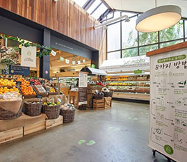
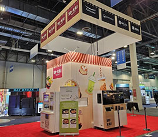
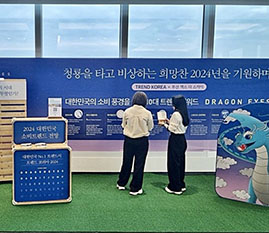
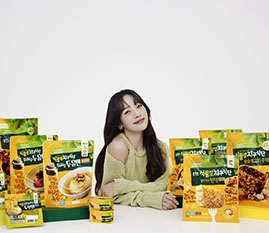

인재채용
인재채용 고객기쁨센터
고객기쁨센터 풀무원
풀무원


-

풀무원 올가홀푸드, 환경부 지정 녹색특화매장 11곳 신규 선정…국내 제로웨이스트 문화 선도
환경부 지정 제1호 ‘녹색특화매장’을 운영하며 국내 제로웨이스트 문화를 선도하고 있는 올가홀푸드가 서울 전 지역으로 녹색특화매장을 확대하며 지속가능한 친환경 소비 문화를 전파한다. 풀무원 계열의 LOHAS Fresh Market, 올가홀푸드(대표 강병규, 이하 올가)는 방배점, 압구정점, 강남점 등 11개 매장이 환경부 지정 ‘녹색특화매장’에 신규 선정되면서 서울 내 전 매장이 제로웨이스트(Zero-Waste) 매장으로 운영된다고 12일 밝혔다. ‘녹색특화매장’이란 환경부가 운영하는 ‘녹색매장’을 보다 확장·발전시킨 개념으로 친환경 녹색소비문화 확산을 위해 플라스틱 쓰레기 발생을 최소화한 ‘제로웨이스트(Zero Waste)’ 콘셉트의 매장을 뜻한다. 올가는 지난 2020년 방이점이 국내 최초로 환경부 지정 ‘녹색특화매장’으로 선정된 바 있으며, 이번에 11개 매장이 추가 선정됨에 따라 서울 내 전 매장을 ‘녹색특화매장’으로 운영한다. 올가는 1981년 국내 최초 유기농 전문점으로 시작해 친환경 업계를 리딩하고 ESG 경영을 강화하고 있는 친환경 전문 유통사이다. 2020년 국내 최초 환경부로부터 제1호 ‘녹색특화매장’ 지정을 받았으며, 전 직영점이 환경부 녹색매장으로 지정되는 등 환경친화적 점포 운영에 적극적으로 나서고 있다. 최근 서울 내 전 매장이 생산, 유통, 소비 단계에서 불필요한 1회용품 및 플라스틱 포장재 사용을 최소화한 '제로마켓’으로 선정되며 국내 제로웨이스트 문화 확산에 앞장서고 있다.
2024-01-12 -

풀무원, 2024 국제전자제품박람회에서 무인 즉석조리 플랫폼 ‘출출박스 로봇셰프’ 선보여
풀무원이 세계 최대 규모의 첨단 산업 전시회인 '국제전자제품박람회'에 참가해 미국 현지 소비자들에게 무인 즉석조리 플랫폼 ‘출출박스 로봇셰프’로 만든 메뉴를 선보인다. 풀무원(대표 이효율)은 미국 네바다주 라스베이거스에서 현지시간 9일부터 12일까지 열리는 ‘2024 국제전자제품박람회(Consumer Electronics Show 2024, 이하 CES 2024)’에 참가해 로봇 조리 스마트 무인 자판기 ‘출출박스 로봇셰프(이하 로봇셰프)’로 만든 한식 메뉴를 선보인다고 10일 밝혔다. 미국소비자기술협회가 주관하는 CES 2024는 1967년 첫 개최 이후 올해 57년째를 맞는 세계 최대 규모의 첨단 산업 전시회로, 이번 행사 기간 동안 총 3,500여 기업이 참가했으며 약 13만여 명의 관람객이 방문할 것으로 추산된다. 과거에는 IT와 가전 중심의 행사였으나, 최근 자동차와 유통 기술뿐만 아니라 푸드테크까지 폭넓은 산업의 첨단 기술을 선보이는 자리로 전 세계의 관심을 받고 있으며 참가하는 기업군도 다양해지고 있다. 올해의 주제는 'All Together, All on'으로, 인공지능(AI)기술 발전이 다양한 산업에 가져올 변화를 화두로 개최됐다. 풀무원의 이번 행사 참가는 미국 스마트 자판기 스타트업 ‘요카이 익스프레스(Yo-Kai Express)’와의 협업을 통해 진행됐다. 풀무원은 베네시안 엑스포 컨벤션 센터 2층 푸드테크 존에 마련된 요카이 익스프레스 홍보관에 ‘로봇셰프 기기를 전시하고 현장을 찾은 소비자 및 바이어들을 대상으로 한식 메뉴 3종(육개장국수, 떡국, 식물성불고기덮밥)을 선보였다.
2024-01-10 -

풀무원푸드앤컬처, 신년 맞아 부산엑스더스카이에서 베스트셀러 ‘트렌드 코리아’ 컬래버레이션
풀무원의 푸드서비스 전문 기업 풀무원푸드앤컬처(대표 이동훈)는 부산 해운대구에서 운영 중인 국내 최대 규모 전망대 부산엑스더스카이에서 베스트셀러 ‘트렌드 코리아’ 시리즈를 출간하는 미래의창과 컬래버레이션 이벤트를 운영한다고 11일 밝혔다. 트렌드 코리아 시리즈는 매년 대한민국의 경제, 사회, 문화 전반을 분석하여 다음 한 해의 소비 트렌드 키워드 10개를 선정하여 알려주는 책으로, 매년 출간될 때마다 종합 1위에 오르는 베스트셀러이다. 이번 브랜드 컬래버레이션은 2024년 소비 트렌드 키워드를 부산에서 가장 높은 장소인 부산엑스더스카이에서 만날 수 있는 신년 이벤트로 기획되었다. 트렌드 코리아는 시리즈 출간 시 매년 12지신 동물 띠에서 착안해 한 해의 타이틀을 정하고 있으며, 2024년 청룡의 해에는 ‘DRAGON EYES’를 메인 타이틀로 2024년 소비 트렌드 키워드를 소개한 바 있다. 고객들은 부산엑스더스카이 100층에서 현재까지 출간된 트렌드 코리아 시리즈(2012-2024) 전시를 볼 수 있으며, 청룡의 해 기념 포토존에서 특별한 시간을 보낼 수 있다. 전시 및 포토존 공간은 ESG 경영과 지역업체와의 상생을 위해 친환경 기물 활용 행사 전문 기획사인 부산 소재의 ‘만만한녀석들’과 협업을 통해 마련되었다.
2024-01-11 -

이효리, 풀무원 지속가능식품 전문 브랜드 ‘풀무원지구식단’ 캠페인 모델로 나선다
가수 이효리가 풀무원과 손잡고 지속가능식품 전문 브랜드인 ‘풀무원지구식단’ 캠페인 모델로 나선다. 풀무원(대표 이효율)은 12일 식물성 대체육을 포함한 지속가능식품 전문브랜드인 ‘풀무원지구식단’ 캠페인 전속모델로 가수 이효리를 선정하고 ‘나를 위해 지구를 위해 이효리는 풀무원지구식단 합니다’ 캠페인 티저 영상과 이미지를 공개했다. ‘풀무원지구식단’은 캠페인 메인 슬로건으로 ‘이효리는 풀무원지구식단 합니다’를 내걸고 다양한 온오프라인 캠페인을 전개할 계획이다. 먼저 이날부터 연말까지 유동 인구가 많은 서울 강남역, 삼성역, 서울숲 등과 지하철, 시내버스에 옥외광고로 ‘풀무원지구식단’의 노출을 극대화하고, 온라인에는 브랜드 필름 영상을 공개하며 바이럴 마케팅을 펼칠 예정이다. 내년 1월부터는 본격적으로 ‘풀무원지구식단’ 브랜딩을 위한 CF 영상 및 개별 제품 광고를 순차 공개할 계획이다. 창사 이래 유명 연예인을 CF 모델로 기용하지 않는 것으로 유명한 풀무원이 특정 광고모델을 선정한 것은 1984년 창립 이래 39년 만에 처음 있는 파격적인 일이다. 풀무원은 평소 바른먹거리 기업 이미지를 중요시하여 특정 CF 모델을 발탁하지 않았으나, 지난해 8월 ‘나를 위해 지구를 위해’라는 슬로건을 가지고 론칭한 ‘풀무원지구식단’이 지속가능한 라이프스타일을 추구하는 이효리와 가치관과 이미지 면에서 부합하여 시너지를 극대화할 수 있을 것으로 판단하여 협업하기로 했다. 이효리는 영상 메시지를 통해 “제가 풀무원의 첫 광고모델이 되었다고 들었다”며 “평소에도 풀무원을 정말 좋아하는데 첫 모델이라니 너무 기분이 좋다”고 전했다.
2023-12-12
메인영상
건강에 좋은것이
환경에도 좋습니다.
사람과 자연을 함께
사랑하는 풀무원이 권하는
지혜로운 라이프 스타일
풀무원
풀무원 정신은 스스로 일군 풀무원농장에 유기농을 통해 이웃사랑, 생명존중을실천하는 데
한평생을 바쳤던 위대한 농부이자 성실한 평화주의자 원경선으로부터 시작합니다.
가치체계
로하스 기업 풀무원의미션을 소개합니다.
히스토리
사람과 자연을 함께사랑해온 풀무원의 시간.
사회책임경영
지속가능한 사회와지구환경을 위한 경영활동.
풀무원사업
고객과 함께 만든풀무원의 사업들.
바른먹거리
나와 내 가족의 건강, 더 나아가 지구환경의 건강까지 두루 살핍니다.
사회책임경영
‘이웃사랑’과 ‘생명존중’ 정신을 바탕으로
로하스 생활(LOHAS Living)을 구현해나갑니다.
뉴스룸
풀무원의 다양한 소식과 생생한 뉴스를 매일 만나실수 있습니다.